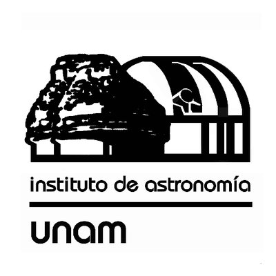
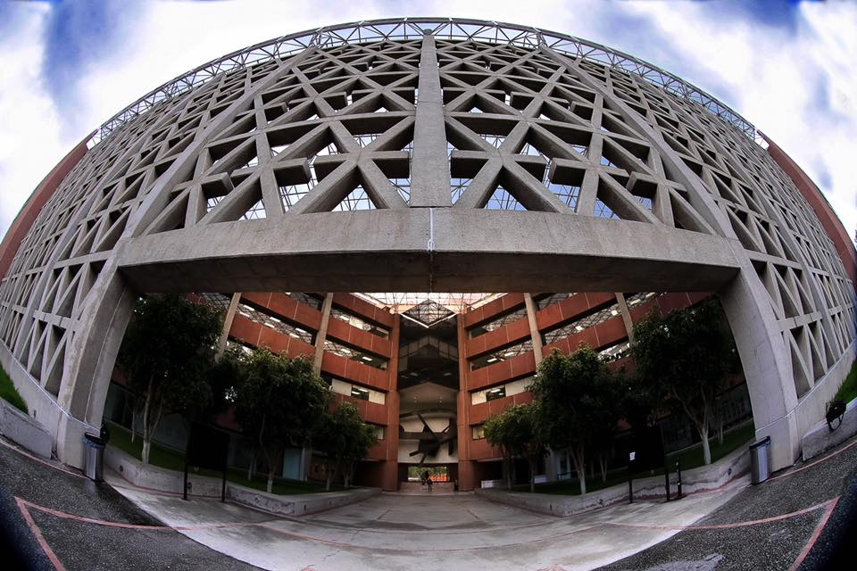

Dra. Gabriella Piccinelli Bocchi
Doctora en Ciencias (Física) UNAM
Ingeniera Física, UAM Azcapotzalco
Profesora de Carrera Titular “B” Tiempo Completo Definitiva Adscrita al Centro Tecnológico, Área de Estudios Ambientales Miembro del Sistema Nacional de Investigadores (SNI) nivel I Catedrática en la Carrera de Ingeniería en Computación y en el Posgrado de Ingeniería
Estudié la carrera de Ingeniería Física en la Universidad Autónoma Metropolitana, plantel Azcapotzalco.
Realicé mi tesis en la Secretaría de Agricultura y Recursos Hidráulicos, en el tema “Aspectos de la Contaminación por Metales Pesados en el Lago de Chapala”.
Maestría y el Doctorado en Ciencias (Física) en la Facultad de Ciencias de la Universidad Nacional Autónoma de México, con beca de UNAM-DGAPA, graduándome en 1989 y 1994, respectivamente.
Trabajo
Realicé la tesis doctoral en el Departamento de Física de la Universidad de Padua, Italia, especializándome en Cosmología. Mi tesis doctoral vertió sobre: “Modelos de Inflación en teorías escalar-tensorial generalizadas de la gravitación”.
Trabajé como Investigadora asociada C, tiempo completo, en el Instituto de Astronomía, UNAM, del 94 a mediados de 98, y, a partir de julio del 98, he venido desarrollandome profesionalmente en el Centro Tecnológico Aragón (CTA), FES Aragón (anteriormente ENEP).
-

-

-

-

En el CTA he desarrollado trabajo de investigación en dos grandes áreas, una de ellas, relacionada con la evolución del universo temprano y, la otra, con los temas que me interesaban y preocupaban cuando me estaba formando como Ingeniera: la contaminación de los cuerpos de agua.
En el campo del universo temprano, me he enfocado en las transiciones de fase cosmológicas y el comportamiento de la materia en condiciones extremas: altas temperaturas y densidades, presencia de campos magnéticos y condensados de Bose-Einstein. Ha realizado este trabajo en colaboración con investigadores y estudiantes de diferentes Facultades e Institutos de la UNAM y de otras universidades nacionales y extranjeras. Varios estudiantes de
Ingeniería en Computación de la FES Aragón han trabajado conmigo, iniciándose a la investigación y recibiendo en ocasiones becas de mis proyectos UNAM-DGAPA-PAPIIT.
A lo largo de 23 años me he desempañado como docente en la UNAM impartiendo materias de las carreras de Física e Ingenierías y de los posgrados de Física, Astronomía, Arquitectura e Ingeniería en Sistemas. Actualmente, las materias que suelo impartir son: Temas Selectos de Matemáticas: Estadística Avanzada y Proyecto de Investigación I, II y III, de la Maestría en Ingeniería de Sistemas; Ecuaciones Diferenciales y Electricidad y Magnetismo, materias básicas de la Licenciatura de Ingeniería en Computación
Contribuciones
He publicado 20 artículos en revistas internacionales arbitradas, el capítulo de un libro y varias contribuciones en congresos.
En el área de Estudios Ambientales, colaboré en el diseño del proyecto Desempeño Ambiental y Mejora de la Calidad de Vida de Pequeñas Comunidades y Centros de Producción, en el marco del cual desarrollo proyectos con estudiantes de licenciatura y maestría, a través de tesis y servicios sociales. Me desempeñé como responsable del Laboratorio de Ingeniería Ambiental del Centro Tecnológico, de 1998 a 2006, tiempo durante el cual trabajé en la consolidación de un grupo de investigación multidisciplinario en Estudios Ambientales y en la organización y equipamiento del Laboratorio de Ingeniería Ambiental.
Proyectos
Desarrollé el proyecto: Estudio del Estado Trófico y de la Calidad del Agua de las Lagunas de El Rodeo Y Coatetelco (Morelos, México), (2003-2005).
Actualmente cuento con PRIDE B y SNI I. He sido responsable de cuatro proyectos UNAM-DGAPA-PAPIIT y corresponsable de dos. Actualmente soy responsable del proyecto IN117817 que lleva como título “Comportamiento de la materia en condiciones extremas en el universo” (2017 – 2019).
He participado como árbitro de proyectos para la DGAPA y el CONACyT. He realizado estancias sabáticas en el Departamento de Física de la Universidad de Ferrara, Italia; en el Instituto de Cibernética, Matemáticas y Física, en La Habana, Cuba y en el
Departamento de Física Teórica y el Cosmos de la Universidad de Granada, España, con becas PASPA-UNAM. También he realizado estancias cortas de investigación en Italia, Cuba y Chile.
Preocupada por el proceso de enseñanza-aprendizaje de las materias básicas en Ingeniería, estoy fomentando con los estudiantes procesos colectivos de estudio y de creación de productos de apoyo a la docencia.
Soy Tutora del Posgrado de Ingeniería, campo de conocimiento de Ingeniería de Sistemas, y actualmente dirijo tres proyectos de tesis
En licenciatura, en la carrera de Ingeniería en Computación, dirigió la tesis Condensados de Bose-Einstein y Computación Cuántica, incursionando con la estudiante en un tema de frontera; actualmente está dirigiendo la tesis: Desarrollo de herramientas computacionales para considerar el efecto de los campos magnéticos en la evolución del universo temprano, incorporando plenamente al estudiante en el proyecto de investigación.
En el ámbito de la difusión de la cultura, organizo congresos internacionales, talleres en distintos temas e imparto conferencias de divulgación de la ciencia en diferentes foros.